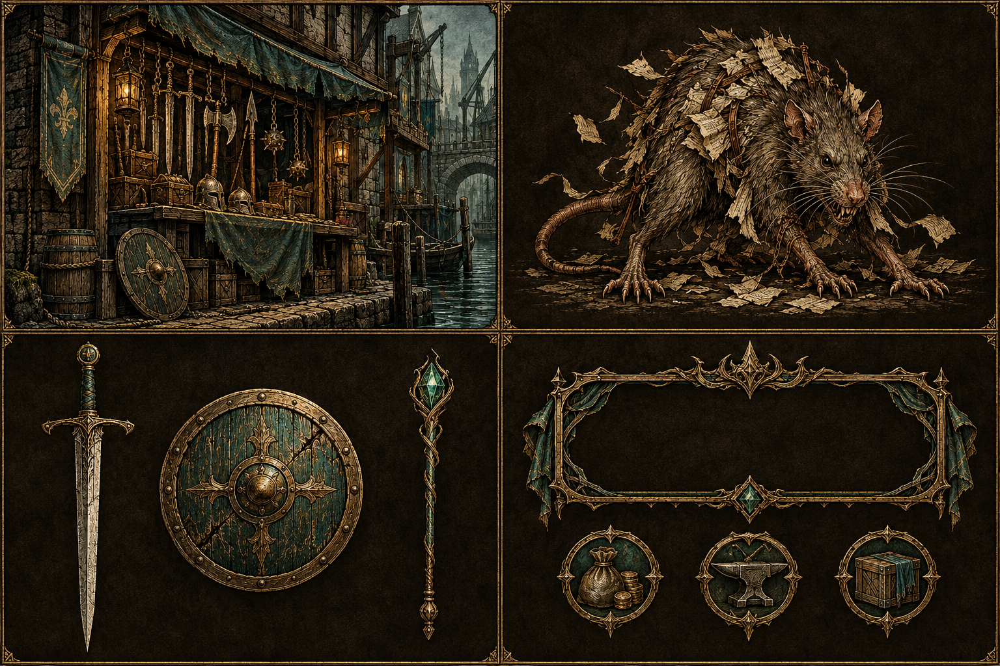

01 · Etched Brass Earlier pick

Feel: intricate ink engraving, tactile and old-world.
Strength: one coherent visual language spans settings, enemies, items, and interface details.
Tradeoff: dense hatching needs simplification at small sizes.
Select the board to open the full-size original ↗